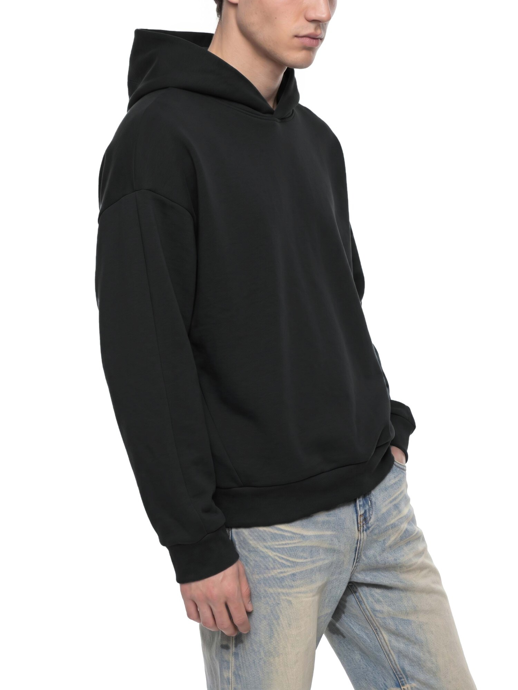

A boxy hoodie isn't a regular hoodie in a bigger size. It's cut differently: wider through the body, relaxed shoulders, and a shorter length. This guide shows what that looks like, how to measure, and which size to pick in The Founding Member Hoodie.
What "boxy" means
- Wide body. The chest is cut straight and roomy, so it hangs instead of hugging.
- Relaxed shoulders. The shoulders are cut wide (58.5 cm flat in size S), so the seam sits lower than on a regular hoodie.
- Shorter length. Length runs from 61 cm (S) to 69 cm (2XL) — check it in the table below.
The result is a square silhouette. It's meant to look relaxed, not oversized-sloppy.
The Founding Member Hoodie: measurements
Heavyweight fleece, 500 gsm. Flat measurements in cm; 1–3 cm difference may occur.
| Size | Length | Shoulder | Chest (flat) | Sleeve |
|---|---|---|---|---|
| S | 61 | 58.5 | 57 | 48 |
| M | 63 | 60.5 | 59 | 49 |
| L | 65 | 62.5 | 61 | 50 |
| XL | 67 | 64.5 | 63 | 51 |
| 2XL | 69 | 66.5 | 65 | 52 |
Chest is measured flat, side to side. Double it for the full circumference (size M: about 118 cm).
How to find your size in 3 steps
- Take a hoodie you like the fit of. Lay it flat.
- Measure chest and length the same way as the table: chest just below the armpits, side to side; length from the shoulder seam at the collar to the hem.
- Compare with the table and pick the size closest to your hoodie.
Want the boxy look as designed? Take the size closest to your usual hoodie.
Prefer a closer fit? Go one size down and check the length still works for you.
Between two sizes? Choose based on chest width; length matters less in a boxy cut.
Caring for a heavyweight printed hoodie
Always follow the care label inside the hoodie. General tips for printed fleece: wash inside out, avoid ironing directly on the print. (Product-specific care instructions: TO BE CONFIRMED with supplier — do not publish before.)
Ready to choose?
The Founding Member Hoodie: black, 500 gsm, boxy, with design 010 "THE MATRIX CAN'T HOLD ME." on the back. Drop 001, no restock.